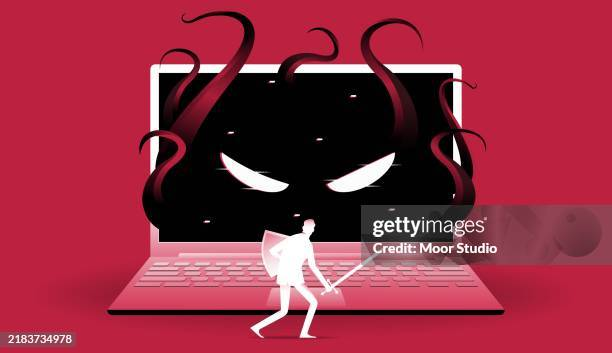
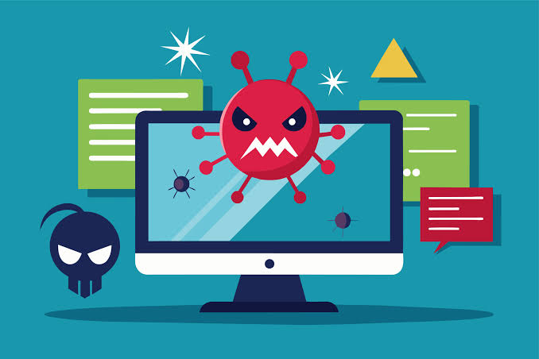

Introducción
Los virus informáticos son programas creados para alterar el funcionamiento normal de un dispositivo o realizar acciones no deseadas. Pueden ingresar a una computadora, celular u otro dispositivo a través de archivos, programas o medios infectados.
Conocer qué son los virus informáticos es importante para comprender los riesgos que existen al utilizar dispositivos y navegar por Internet. En esta página conoceremos sus principales características, cómo pueden afectar a los dispositivos, de qué manera se pueden prevenir y algunos ejemplos de virus informáticos.
¿Qué es un virus informático?
Un virus informático es un tipo de programa malicioso diseñado para ingresar a un dispositivo y alterar su funcionamiento. Puede copiarse o propagarse de un dispositivo a otro mediante archivos, programas, dispositivos de almacenamiento o determinados enlaces.
Los virus pueden realizar diferentes acciones, como modificar archivos, eliminar información, ralentizar el dispositivo o interferir con su funcionamiento. Para propagarse, generalmente necesitan que el archivo o programa infectado sea ejecutado.

Características
Los virus informáticos pueden presentar diferentes características:
- Se propagan: pueden pasar de un archivo o dispositivo a otro.
- Pueden ocultarse: algunos intentan pasar desapercibidos para evitar ser detectados.
- Pueden modificar archivos: pueden alterar o dañar información almacenada.
- Pueden afectar el rendimiento: un dispositivo infectado puede funcionar más lentamente.
- Necesitan un medio para propagarse: pueden utilizar archivos, programas, documentos o dispositivos de almacenamiento.
- Pueden causar diferentes tipos de daños: dependiendo del virus, las consecuencias pueden ser desde pequeñas alteraciones hasta la pérdida de información.
Ventajas y Desventajas
Los virus informáticos no tienen ventajas para el usuario, ya que son programas maliciosos creados para realizar acciones perjudiciales. Sin embargo, estudiar su funcionamiento puede ser útil para comprender las amenazas informáticas y mejorar la seguridad de los dispositivos.
Desventajas
- Pueden dañar o modificar archivos.
- Pueden provocar la pérdida de información.
- Pueden disminuir el rendimiento del dispositivo.
- Pueden propagarse a otros dispositivos.
- Pueden generar problemas en el funcionamiento de programas y sistemas.
funcionamiento
Un virus puede ingresar a un dispositivo mediante un archivo o programa infectado. Cuando el usuario abre o ejecuta ese archivo, el código malicioso puede comenzar a actuar.
Por esta razón, es importante tener cuidado al descargar archivos, abrir documentos desconocidos o utilizar dispositivos de almacenamiento que puedan estar infectados.

Ejemplos
- Melissa: fue un virus que se propagaba mediante documentos de Microsoft Word y podía enviarse a otros contactos mediante el correo electrónico.
- ILOVEYOU: fue un programa malicioso que se difundió a través de mensajes de correo electrónico y consiguió propagarse rápidamente entre numerosos usuarios.
- WannaCry: fue un ataque informático que afectó a numerosos equipos y utilizó una vulnerabilidad de sistemas Windows para propagarse.
Conclusión
Los virus informáticos representan una amenaza para la seguridad y el funcionamiento de los dispositivos. Pueden propagarse mediante archivos, programas y diferentes medios, y provocar daños o pérdida de información.
Por eso, es importante conocer cómo funcionan y adoptar medidas de prevención, como mantener los sistemas actualizados, utilizar herramientas de seguridad y evitar abrir archivos o enlaces sospechosos. Comprender estas amenazas nos permite utilizar la tecnología de una manera más segura y responsable.